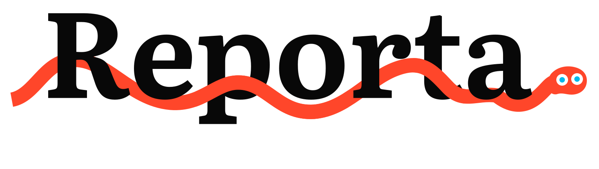
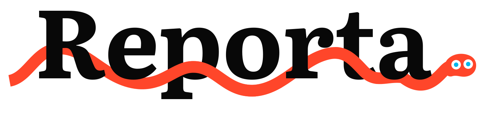
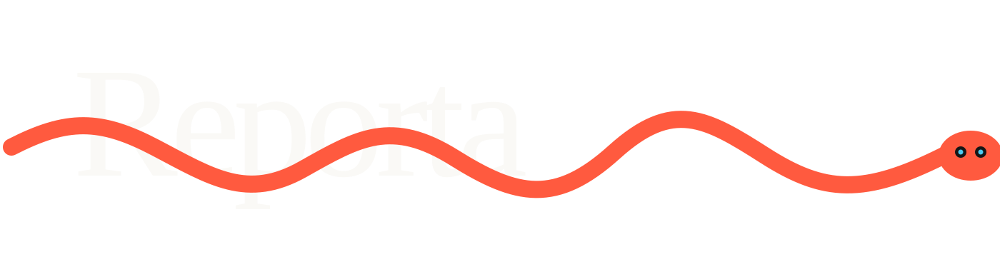
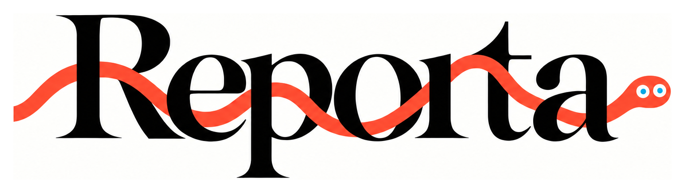
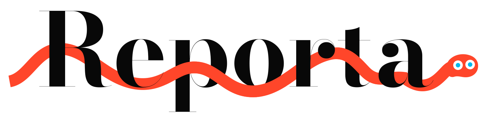
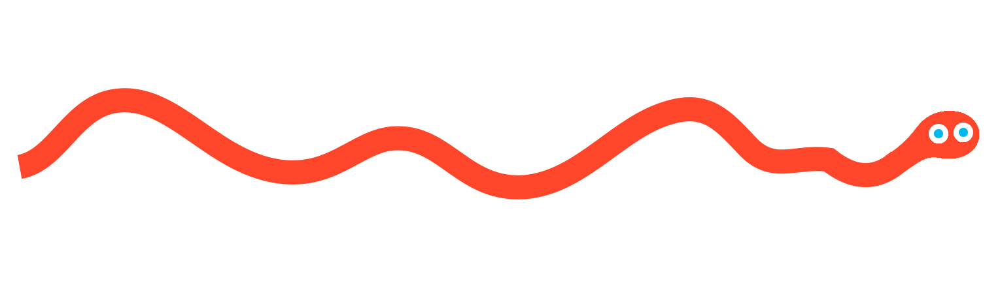

Reporta / Literata
Пробуем Literata вместо Bodoni. В основном примере — 650, рядом — 600 и 700. Оптический размер 18: плотные тонкие штрихи без волосных засечек. Буквы в кривых, родной кернинг, без растяжения и искусственной обводки.
Literata 650 / текущая проба
Средняя насыщенность. Плотные штрихи и открытые просветы. Геометрия змейки не изменена.

Шрифт и лицензияLiterata 600
Чуть легче. Больше воздуха внутри букв.
Literata 700
Чуть плотнее. Более тяжёлая надпись при той же ширине.

Literata 650 / тёмный фон

Исходный логотип

Bodoni Moda / предыдущий вариант
Для сравнения: сверхтонкие штрихи и засечки, от которых уходим.

Предыдущие кандидаты
DM Serif Display
Предыдущий кандидат: плотная e, округлая p и восходящая форма t. У R другая ножка, поэтому совпадение с исходником не один в один.

Prata
Более острые окончания и выразительная форма t. Кандидат на близкую пластику оригинала.
Шрифт и лицензияLibre Caslon Display
Тоньше и спокойнее. Для сравнения с более книжным направлением.
Шрифт и лицензия